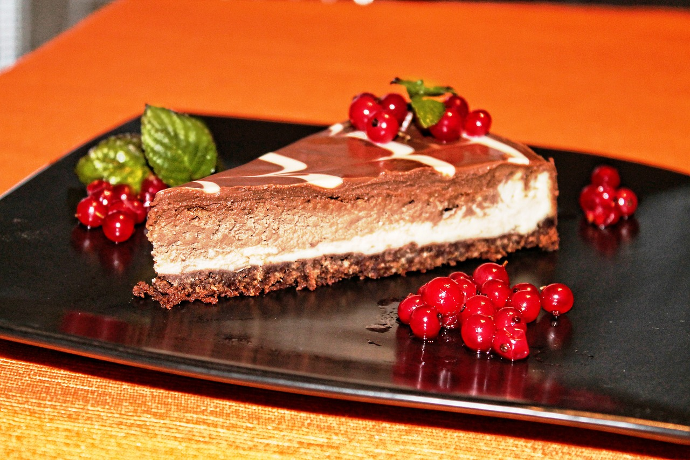

Muffins
Ingredientes
- 1 taza de leche (240 mililitros)
- 2 tazas de harina (280 gramos)
- 2 cucharadas de postre de polvos para hornear (levadura tipo Royal)
- ½ cucharadita de sal
- ½ taza de azúcar (100 gramos)
- 2 huevos
- 1 cucharada sopera de mantequilla
Preparación
- Hacer muffins en casa es muy sencillo, solo necesitas reunir los ingredientes indicados y los utensilios adecuados, como un bol grande, moldes para magdalenas, varillas eléctricas o manuales y un colador. Dicho esto, empezamos batiendo la mantequilla a temperatura ambiente con el azúcar.
- Luego, para conseguir que los muffins caseros fáciles de hacer queden bien esponjosos, separamos la clara de las yemas de los huevos. Introducimos a la mezcla anterior las yemas y seguimos batiendo.
- Después, vertemos la leche y seguimos mezclando para integrar todos los ingredientes. Tamizamos la harina con los polvos de hornear y la sal, agregamos esta mezcla y la incorporamos con una espátula, haciendo movimientos envolventes. Aparte, precalentamos el horno a 200 ºC.
- Por último, batimos las claras a punto de nieve y las añadimos, incorporándolas también haciendo movimientos envolventes suaves. Esto es opcional, puesto que si se agregan los huevos enteros los muffins fáciles de hacer quedarán igualmente deliciosos, aunque menos esponjosos.
- Para potenciar el sabor de los muffins caseros, se puede añadir esencia de vainilla, jugo de limón o canela en polvo. Una vez lista la masa, ocupamos 3/4 partes de los moldes y horneamos durante 20-30 minutos a 180 ºC con calor arriba y abajo. En función del horno puede que tarden menos en hacerse, de manera que es importante vigilarlos.
- Pinchamos uno con un palillo y si este sale completamente limpio querrá decir que ya están los muffins caseros y podemos retirarlos del horno. Dejamos que se enfríen sobre una rejilla antes de servirlos. Una vez fríos, podemos decorarlos con azúcar glass, salsa de chocolate, caramelo, dulce de leche, ¡o lo que más nos guste! Como ves, estos son unos muffins fáciles de hacer, rápidos y deliciosos. ¡Anímate a prepararlos y dinos qué te ha parecido la receta!


Cheese cake
Ingredientes
- 300 gr galletitas
- 300 gr galletitas
- 600 gr queso crema o philadelphia
- 3 huevos
- 200 gr azúcar
- Esencia de vainilla
- 40 gr harina
- 150 cc crema de leche
- Mermelada
- Frutos rojos
Preparación
- En la procesadora, moler las galletitas. Cuanto más molidas queden mejor va a quedar la base, pero no es necesario llegar a hacerlas polvo.
- Ponemos las galletas molidas en un bol y colocamos la manteca derretida. Mezclamos bien hasta que quede arenosa.
- Precalentamos el horno a 160 c. Enmantecamos y enharinamos una tartera desmontable y ponemos la mezcla de galletas en el fondo, presionando con los dedos para que quede bien apretada.
- La ponemos en el horno precalentado unos minutos, sin necesidad de que se cocine del todo, pues lo hará luego cuando tenga el relleno. Lo dejamos por 10-12 min y reservamos.
- Para el relleno, en un bol grande batimos un poco el queso crema. Agregamos los huevos de a uno y batimos al incorporar cada uno.
- Incorporar el azúcar, la esencia de vainilla y batir bien.
- Por último, agregar la harina, intercalada con la crema de leche y batir bien hasta que se integre correctamente.
- Vertemos la preparación sobre la base de galletas, cubrimos com papel aluminio y llevamos al horno por una 1h y 15. Subiremos un poco el horno, a 180 grados (moderado)
- Luego, dejamos descansar dentro del horno apagado por 1 h. Pasada ésta, llevamos a la heladera por mínimo 3 h. Si queremos el postre para la noche, recomiendo hacerlo a la mañana así esta bien frío.
- Cuando este frío, un rato antes de servirse, ponemos por arriba alguna mermelada de frutilla o combinación de frutos rojos. También podemos ponerle algún fruto rojo por encima, el que más les guste.
- ¡A disfrutar!



Chocolate cake
Ingredientes
- 1 ½ tazas de harina regular
- 5 cucharadas de cacao en polvo sin azúcar
- 1 taza de azúcar
- ½ cucharadita de sal
- 1 cucharadita de bicarbonato de sodio
- 6 cucharadas de mantequilla derretida o aceite
- 1 cucharadita de vinagre de sidra de manzana o vinagre blanco
- 1 cucharadita de vainilla
- 1 taza de agua tibia
- 6 onzas de chocolate oscuro o a su gusto
- 4 cucharadas de mantequilla
- 1 cucharada de crema
- Decoración de su preferencia (Moras/fresas/frambuesas o fruta fresca al gusto, Grajeas, Ralladura de chocolate, Coco tostado)
Preparación
- Pre-caliente el horno a 350F (175C) y ligeramente engrase/enharine un molde de pastel redondo de 9 pulgadas (22 centímetros).
- Cierna o tamice la harina en un tazón mediano.
- Agregue el cacao en polvo y el azúcar, use una cuchara para mezclarlos.
- Agregue la sal y el bicarbonato de sodio, continúe mezclando con la cuchara hasta que todo este bien combinado.
- Haga tres agujeros en la mezcla de la harina: uno grande para la mantequilla derretida o el aceite, y dos más pequeños para el vinagre y la vainilla. Agregue la mantequilla derretida, el vinagre, y la vainilla en sus respectivos agujeros.
- Agregue el agua tibia y continúe mezclando con la cuchara hasta que tenga una masa suave.
- Vierta la masa del pastel en el molde para hornear y hornee a 350F (175C) durante ~ 30 minutos o hasta que al insertar y sacar un palillo en el centro del pastel salga limpio.
- Saque el pastel del horno y déjelo enfriar.
- Para preparar el glaseado de chocolate, derrita la mantequilla en una cacerola pequeña a fuego muy lento. Una vez que la mantequilla se derrita añadir el chocolate, en trozos, y continúe la cocción a fuego lento. Revuelva de vez en cuando y una vez que se haya derretido todo el chocolate, agregue la crema y mezcle bien. Retire la cacerola del fuego y deje que se enfríe un poco antes de decorar el pastel.
- Desmolde el pastel con cuidado - o también si lo desea puede dejar el pastel en el molde, y añadir el glaseado en la parte superior.
- Use una espátula para extender el glaseado o ganache de chocolate en la parte superior de la torta y en los lados (si lo saco del molde). Agregue frutas, grajeas, coco, etc a su gusto. Deje que el pastel se repose un poco, a temperatura ambiente, para que el glaseado se solidifique antes de cortar y servir el pastel. Si refrigera la torta, déjela reposar a temperatura ambiente durante al menos 30 minutos antes de servir para que el glaseado se suavice.
- ¡A disfrutar!